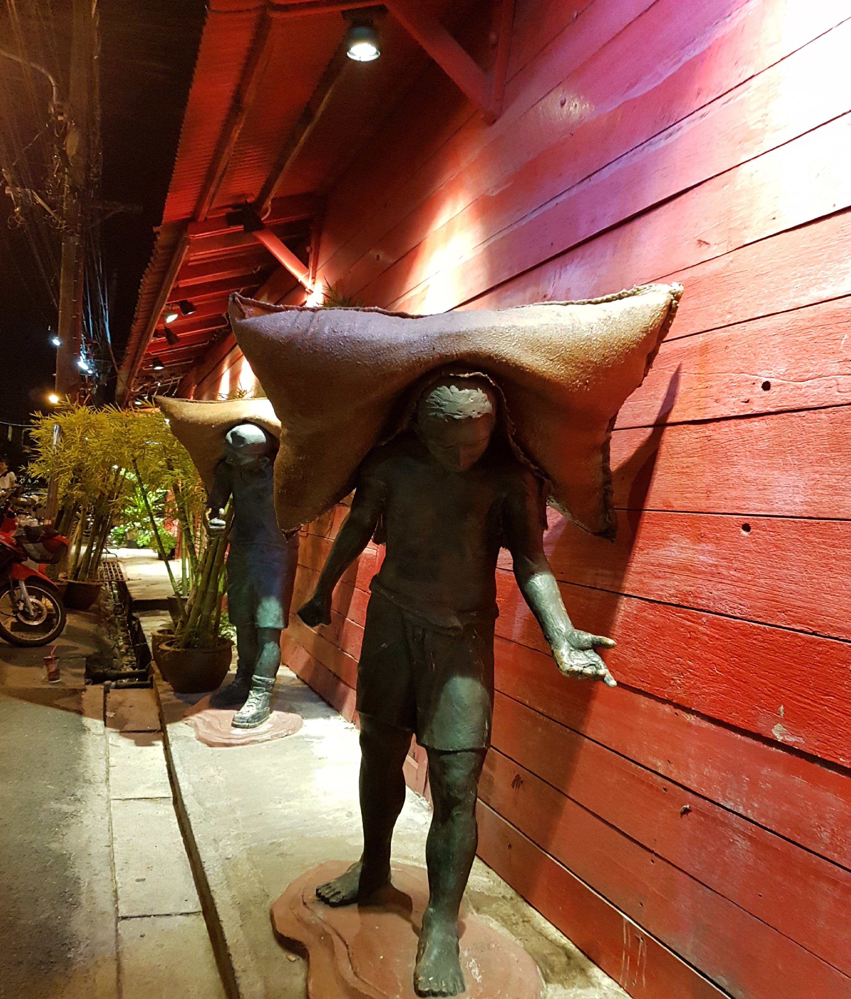
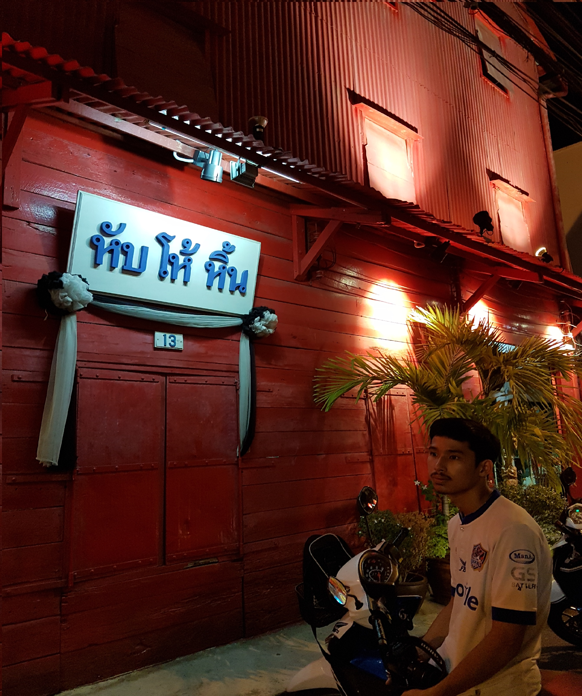
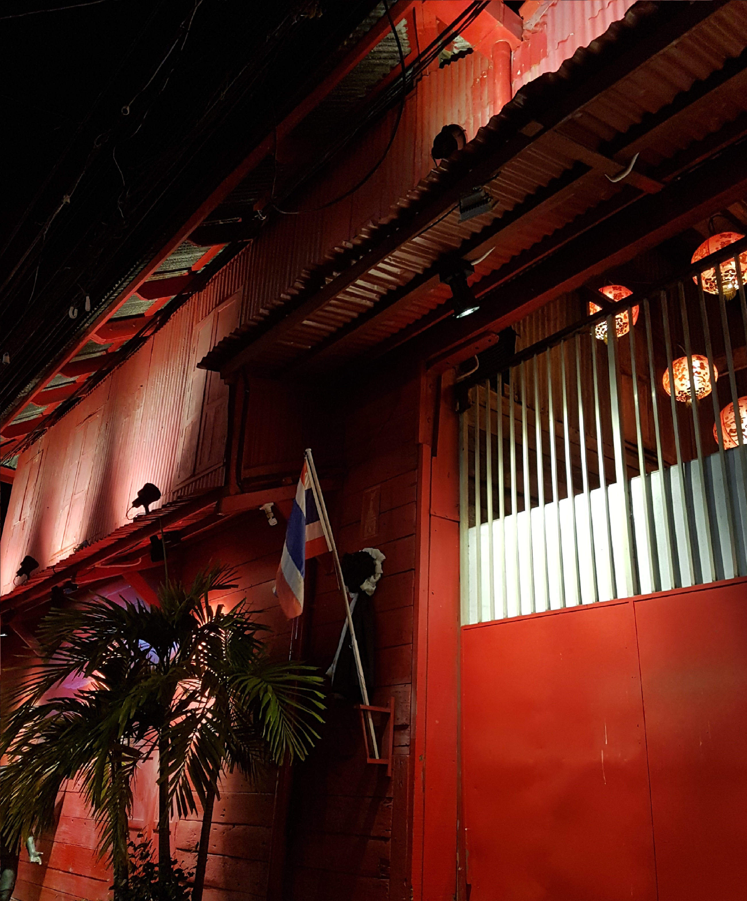
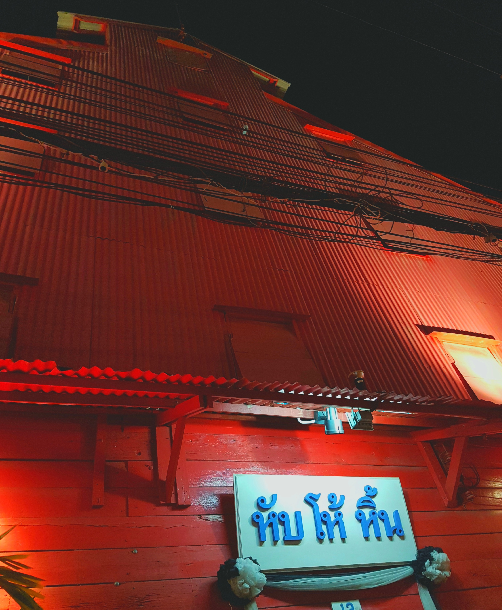

หับโห้หิ้น
ประวัติ
สำหรับชาวสงขลาย่านเมืองเก่า "หับ โห้ หิ้น" คือโรงสีข้าวเก่าแก่ในตัวอาคารสีแดงแรงฤทธิ์ ที่ยังคงความขลังอย่างคลาสสิกบนถนนนครนอก แต่ทำไมต้องชื่อ หับ โห้ หิ้น ชื่อนี้หมายความว่าอย่างไร ตามประวัติศาสตร์ท้องถิ่นเมืองสงขลา เศรษฐกิจของสงขลาในระยะนั้น ขับเคลื่อนโดยกลุ่มพ่อค้าเชื้อสายจีนหลายตระกูล เช่น ณ สงขลา รัตรสาร รัตนปราการ โคนันทน์ เงารังษี และ เลขะกุล เป็นต้น ได้ทำธุรกิจค้าขายกับเกาะปีนัง รวมทั้งมีกิจการโรงสี เพื่อรองรับผลผลิตข้าวจากลุ่มน้ำทะเลสาบสงขลาอันอุดมสมบูรณ์ และเนื้อหาข้างต้นได้ระบุไว้ในวิทยานิพนธ์ของ ดร.ศรีสุพร ช่วงสกุล โรงสีแดงหรือโรงสีหับโห้หิ้นเป็นภาษาจีนฮกเกี้ยน แปลว่า เอกภาพ ความกลมกลืน และความเจริญรุ่งเรือง มีนายสุชาติ รัตนปราการ นักเรียนปีนัง เป็นคนออกแบบ โรงนี้แห่งนี้ตั้งมานานแล้ว โดยรับข้าวเปลือกมาจากอำเภอระโนดและพื้นที่ใกล้เคียง มีคนงานเชื้อจีนกว่า 10 คน เปิดเครื่องสีข้าวทั้งวันทั้งคืนติดต่อกันเป็นเดือนๆ ข้าวที่สีเสร็จจะส่งไปขายแถวจังหวัดภาคใต้ นราธิวาส ตรังกานู มาเลเซีย ปิดกิจการไปตั้งแต่หลังสงครามโลก ปัจจุบันไม่ได้เป็นโรงสีข้าวแล้ว



